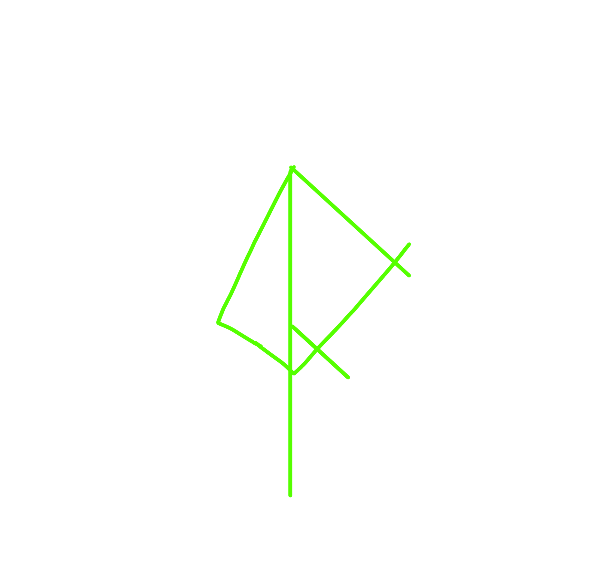

Incidente
“Vuestra voluntad se vió afetada por el caos que ronda en las ciudades de Hyuja y los demás países.”
“Los demonios han regresado.”
Runas Recuperadas
¿Habéis sido capaz de ver en vuestra alma el veneno que no ha muerto?.
Nota del Templo
Hemos sido victimas del vandalismo. De la blasfemia. En tinta del demonio bien se ha escrito:
“Me habréis encontrado a mí, el veneno, en la inocencia y la risa.”
Conjuntamos la imagen del mensaje. Jungan padre nuesto, protege a tus hijos.